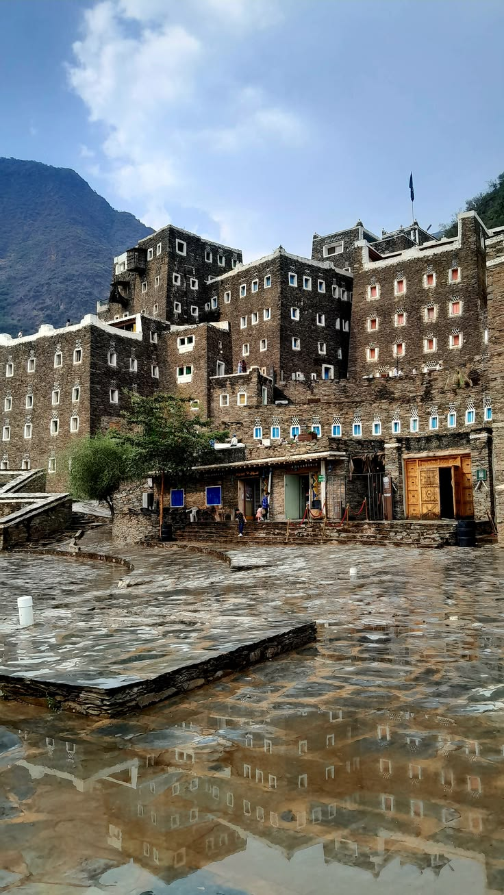
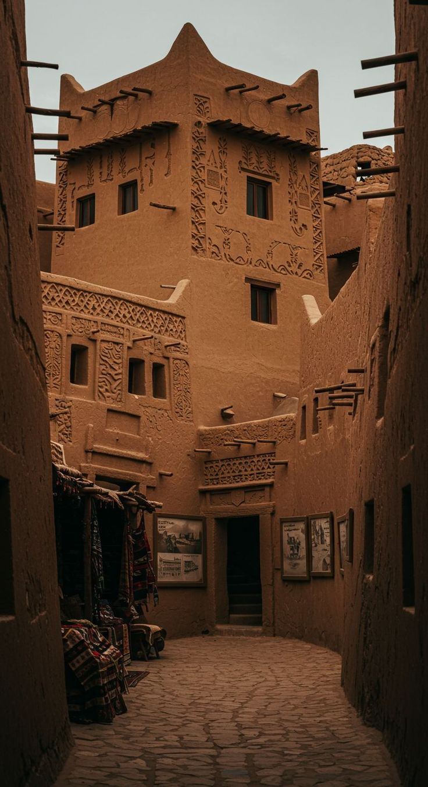
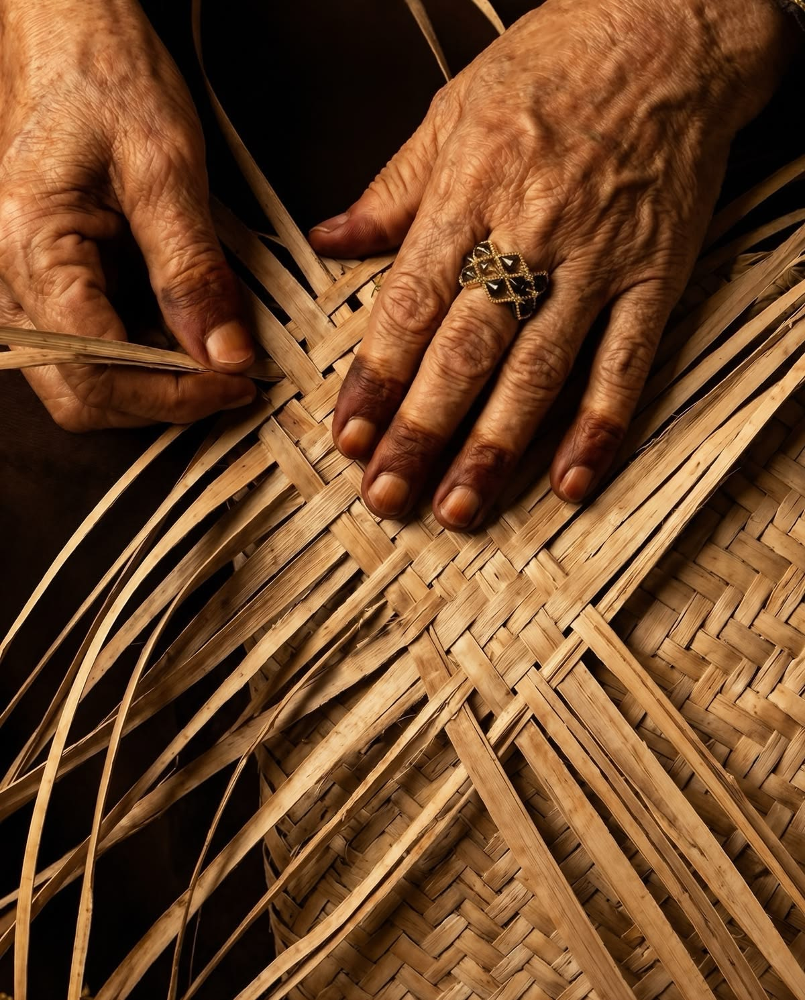

حكاية اليوم
حين تتحول الألوان إلى ذاكرة
في تفاصيل الحرف والفنون الشعبية، نجد قصصًا تعكس البيئة والحياة التي عاشها أهل المكان.
اقرأ الحكايةرحلة في ذاكرة المكان
رحلة لاكتشاف الأماكن والحرف والفنون التي شكّلت ملامح الثقافة السعودية.
ابدأ الرحلةوش هو الأثر؟
هو حرفة انتقلت من يد إلى يد، قصة تناقلتها الأجيال، ولحن ما زال يُسمع حتى اليوم.
اكتشف
لكل منطقة ملامحها، ولكل ملامح حكاية.



حكاية اليوم
في تفاصيل الحرف والفنون الشعبية، نجد قصصًا تعكس البيئة والحياة التي عاشها أهل المكان.
اقرأ الحكايةالحرف
حِرف تناقلتها الأجيال وما زالت تحكي جزءًا من تاريخنا.
نسيج تقليدي ارتبط بحياة أهل البادية وصناعة المنسوجات.
حرفة تعتمد على سعف النخيل لصناعة منتجات متعددة.
حرفة تعتمد على الطين وتحولت إلى جزء من الحياة اليومية.
هل تعرف؟